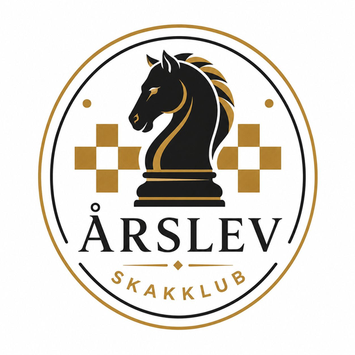

1. aug2026
Kalenderen er opdateret
De 4 mandage, hvor vi skal spille OS-turnering, foregår jo inde i OS, og der er ikke skak i Årslev de aftener.
Læs hele nyheden →Ny sæson · mandag 31. august 2026
Du har måske spillet skak tidligere, spiller online eller husker tilbage på hyggespil med din bedstefar i barndommen? Fascinationen af spillet ligger latent og ulmer i bevidstheden. Hvorfor ikke hygge sig i et fællesskab med ligesindede?

Næste klubaften
Velkommen
… men „blot“ et inkluderende socialt fællesskab med skakspillet som omdrejningspunkt. Alle kan være med uanset niveau, køn og alder.
Vi er en lille, hyggelig skakklub i Faaborg‑Midtfyn Kommune på Fyn. Klubben blev stiftet i 1982, og vi er p.t. 12 medlemmer.
Vi hygger os med klubturnering, hurtigskak, venskabskampe m.m. – og spiller med i Fyns Skak Unions holdturnering i serie 1 i sæson 2026/2027.
Du kan helt uforpligtende se klubben an og spille med den første måneds tid. Ingen tilmelding, ingen forpligtelser.
Praktisk
Årslev Skakklub lukker dørene op for den nye sæson i nye, hyggelige spillelokaler på Husmandsstedet den 31. august 2026.
Hver mandag kl. 19.00 i sæsonen. Ring gerne først, så du ikke går forgæves pga. holdskak m.v.
Seniorer 450 kr. pr. halvår.
Pensionister og juniorer 400 kr. pr. halvår.
27 26 45 07
Lean Schier, formand
 Åbn i Google Maps →
Åbn i Google Maps →
Kortdata © OpenStreetMap-bidragydere
Nyheder
De 4 mandage, hvor vi skal spille OS-turnering, foregår jo inde i OS, og der er ikke skak i Årslev de aftener.
Læs hele nyheden →Som sidste aktivitet i den forgangne sæson afholdt vi i går vores afslutning, hvor det vigtigste punkt var at finde årets lynmester. Lidt skuffende var vi kun 7 mand, men der var vist noget med noget sygdom. Vi kastede os ud i en dobbeltrundig alle mod alle, 14 runder, og titlen var der aldrig tvivl om: Jan trampede hen over os alle sammen og vandt med 13/14. Tillykke!
Læs hele nyheden →Efterår 2026
Vi spiller mandage kl. 19.00. Bemærk: de fire mandage, hvor vi skal spille OS‑turnering, foregår inde i OS – der er ikke skak i Årslev de aftener.
| Uge | Dato | Aktivitet | Type |
|---|---|---|---|
| 36 | 31. august 2026 | Opstart og generalforsamling | |
| 37 | 7. september 2026 | Klubmatch mod OS – 1 | Klubturnering |
| 38 | 14. september 2026 | Klubmatch mod OS – 2 | Klubturnering |
| 39 | 21. september 2026 | Hurtigturnering, parti 1–3 af 9 | Hurtigskak |
| 40 | 28. september 2026 | Klubmatch mod OS – 3 | Klubturnering |
| 41 | 5. oktober 2026 | Klubmatch mod OS – 4 | Klubturnering |
| 42 | 12. oktober 2026 | Hurtigturnering, parti 4–6 af 9 | Hurtigskak |
| 43 | 19. oktober 2026 | Holdkamp 1 | Holdkamp |
Du kan støtte klubben ved at tilmelde dig Fynsk Support El & Gas, som udløser 2 øre pr. kWh og 6 øre pr. m³ gas til klubben, uden at det koster dig ekstra.
Så er du velkommen hos os mandag kl. 19.00. Kontakt os gerne inden på 27 26 45 07 (Lean Schier), så du ikke kommer til at gå forgæves pga. holdskak m.v.